During the summer of 2025, I spent 12 weeks working at one of six Honeywell Aerospace sites here in the Valley. I worked specifically at the Phoenix Engines facility where all commercial airplane (and even tank, like the M1 Abrams) engines are designed and assembled. More specifically, I was apart of the Additive Manufacturing (AM) Design team, where we supported all design efforts related to printing parts in metal.
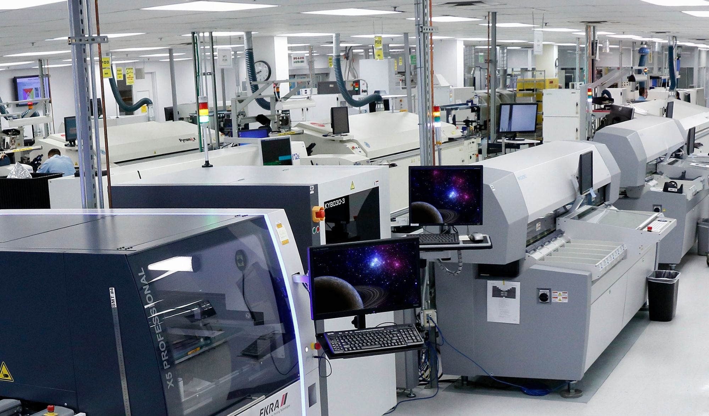
Picture: HTF7000 Assembly Area, Honeywell Aerospace
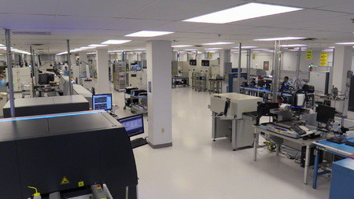
Picture: Additive Manufacturing Technology Center, Honeywell Aerospace Phoenix Engines Facility
While my team was relatively small at Honeywell and some may find that to be a bad thing, I actually liked it. I got an end-to-end exposure to the very tools that my colleagues use in their day-to-day.
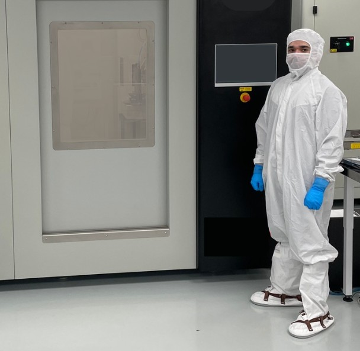
Picture: AM Design Software Workflow | Siemens NX (1st), nTop (2nd), Simufact Additive (3rd), Materialise Magics (4th), GOM Inspect (5th)
It's important to note that the software workflow is broadly linear, but this isn't always the case. Sometimes (as you'll see below), nTop, which can generate complex TPMS structures may not actually be needed for a given part. As such we may skip or return to certain applications as needed. Ultimately, however, this is the general process in bringing a part from idea in NX to reality in GOM Inspect (the step where we scan the metal 3D print)!
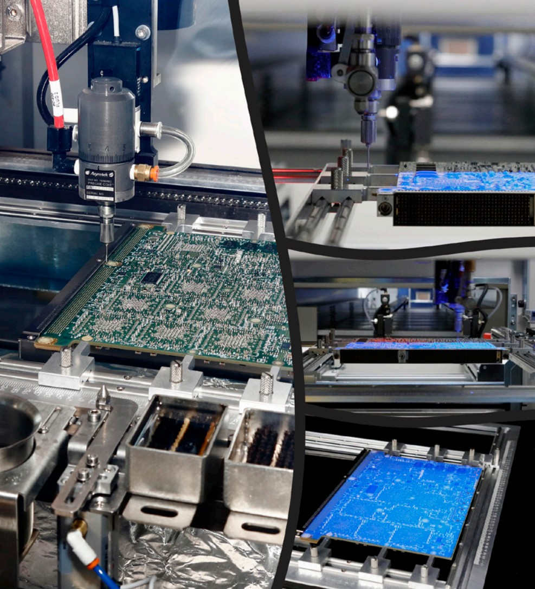
Picture: Siemens NX User Interface
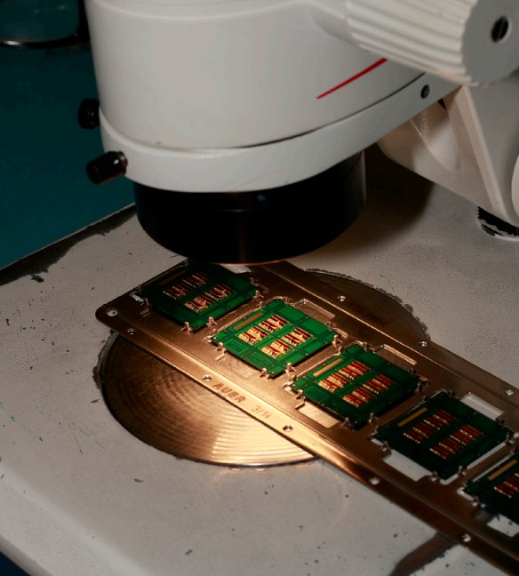
Picture: nTop User Interface
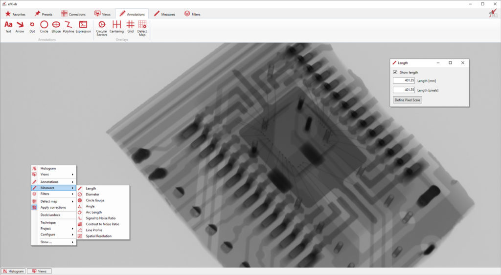
Picture: Simufact Additive User Interface
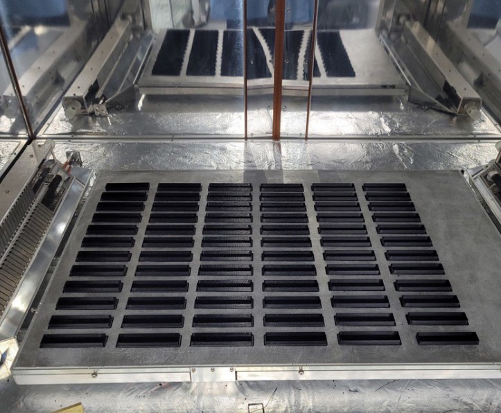
Picture: Materialise Magics User Interface
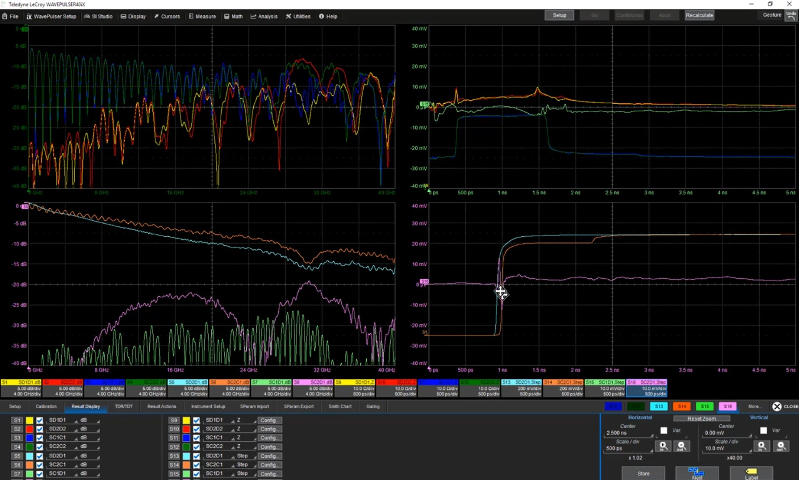
Picture: Streamics User Interface
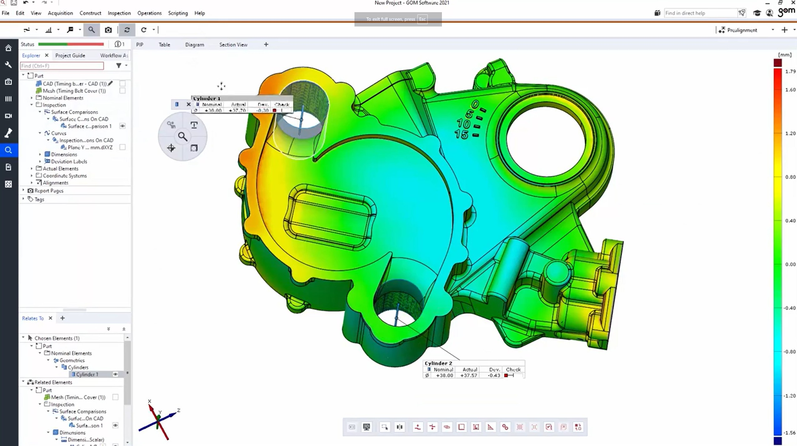
Picture: GOM Inspect (now ZEISS Inspect) User Interface
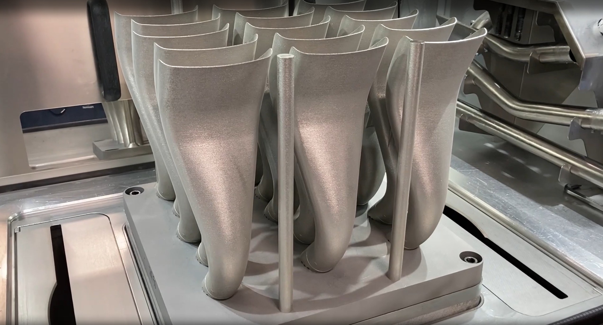
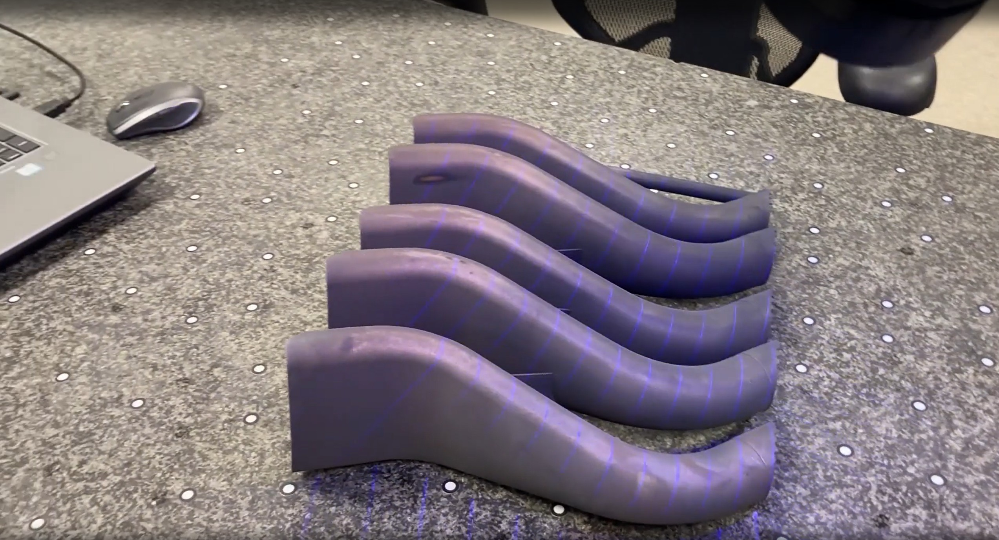
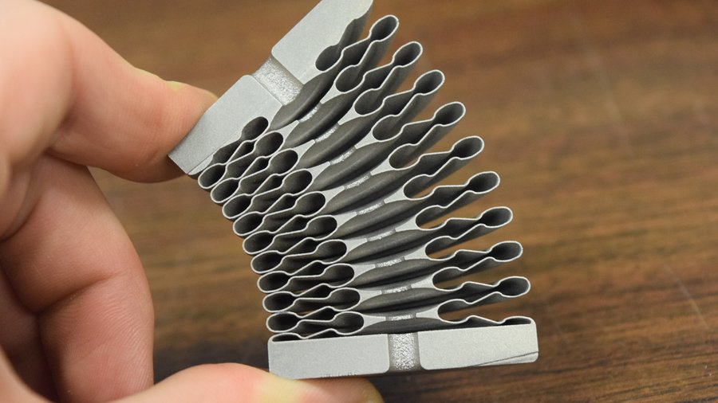
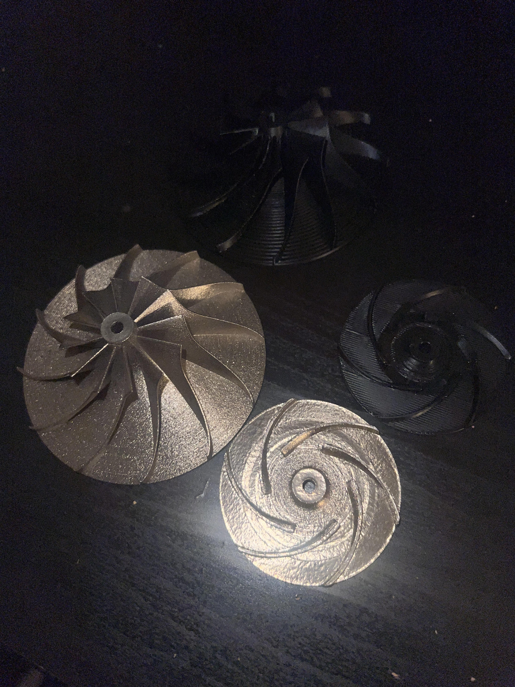
H
f
I
I validated designs through CMM inspections, FEA for structural loads, and thermal cycling tests, achieving TRL 7 for mechanical subsystems.